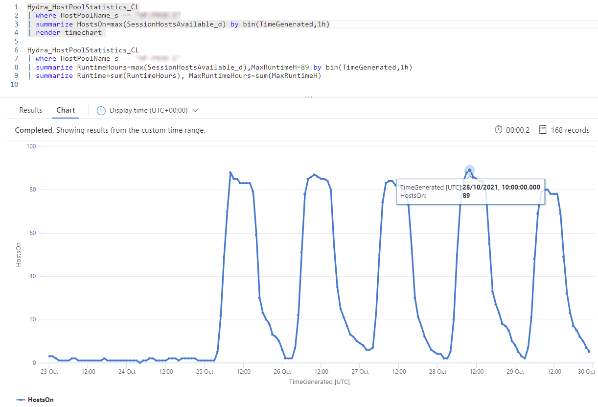
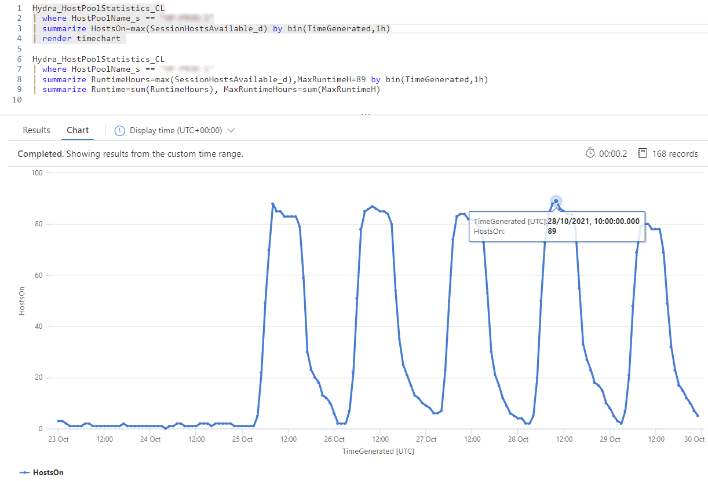
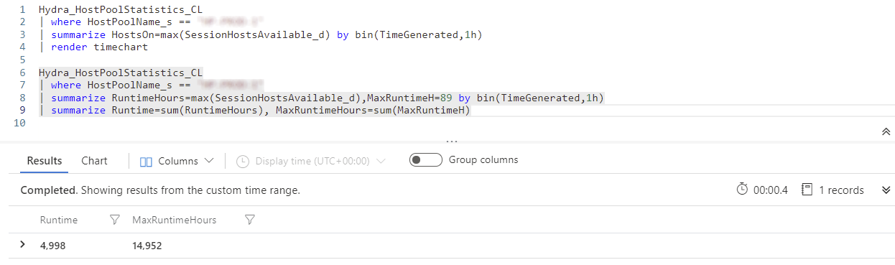

Why switching disk types can save a bunch of money running Azure Virtual Desktop
In March 2021, I introduced a new feature for #WVDAdmin to change the disk type of a VM to automatically change the disk type before starting a VM and after the deallocation of a VM. The purpose was clear: Having a more expensive high-performance disk for the runtime of a VM and a cheap disk while the VM is off. This is especially important because hard disks always cost - regardless of whether the associated VM is on or off.
The implementation was straightforward, while changing the disk type takes only a few seconds. I guess that Microsoft only regulates the performance of disks and is not copying the disks from one storage to another.
I use the same feature in my #AVD solution, “Hydra”. If configured, Hydra changes the disk type on start and stop, triggered by an administrator or Hydras’ autoscaling. But what does this saves in a real-world scenario? I used the data from a deployment serving more than 400 concurrent users per day.
The charts below show the data of a host pool for seven days. Less load on the weekend and more than 400 user sessions on the weekdays:
 

The maximum number of running hosts was 89 on Thursday. So I have at least 89 disks for the hosts. 89 exiting disks for seven days results that I have to pay for 14,952 hours of disks (89 disks * 24h/day * 7day).
As known, it makes a difference if you have to pay for cheap HDD or high-performance Premium Disks like recommended for AVD. Today the costs of a 128 GByte managed disk are:
- HHD
- 5.04 € per month
- 0.007 € per hour (with 30 days a month)
- Premium
- 18.70 € per month
- 0.025972 € per hour (with 30 days a month)
If all of the 89 hosts in the pool use Premium Disks, the customer must pay 388.34 € a week.
We know that not all hosts are running 24h, which means that even the disks are not Premium the whole time. With log analytics, we can measure the runtime in hours overall hosts in the pool: 
For the whole week, the runtime for the hosts (and Premium Disks) was 4,998 hours. The rest of the time, the disks type are the cheaper HHD.
With this number we can calculate the real disk costs for the pool for a week: 4,998h * 0.025972 €/h + (14,952h - 4,998h) * 0.007 €/h = 199.49 € a week.
And that is more than interesting: In this real case scenario, the customer only saves at least 188.85 € a week for the disks - more then 800 € a month. That is tremendous and results in a saving of 49%.
PS: The saving is higher while more than 89 hosts are in the pool to handle more users.
Additional strategies to save money while using AVD:
- Automatic provisioning of new hosts in the morning to handle the first logon storm (scheduled)
- Usage of ephemeral disks
Check-out Hydra: Azure Marketplace